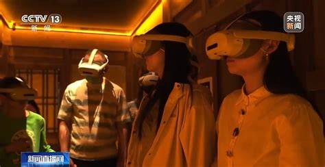
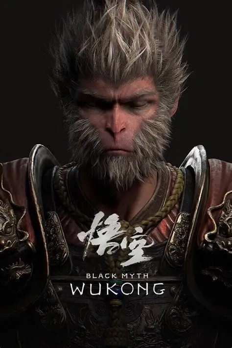

中国传统文化，并非博物馆里尘封的标本，也不是故纸堆中枯燥的文字。它是一个博大精深、鲜活有机的整体， 是中华民族在数千年的漫长岁月中，为了生存、繁衍与发展，一代又一代人不断创造、选择、积累并传承下来的精神 追求、思维方式、行为规范、艺术创造与生活智慧的总和。
要真正理解它，首先需要打破一个常见的误解：传统文化并非属于“过去”，它从未停止过生长。它更像一条波澜 壮阔、奔流不息的大河，发源于远古华夏先民的日常劳作与朴素信仰，在历史的不同河段，不断吸纳各时代的思想精 华、艺术成就与生活经验，同时冲刷掉不合时宜的泥沙。这条大河的主干，由儒、释、道三家思想交织而成，为中国 人提供了安身立命的哲学；它的支流则遍布文学、艺术、建筑、科技、医学、民俗等各个领域。无论是《诗经》里先 民的歌唱、秦砖汉瓦的厚重、唐风宋韵的雅致，还是元明清戏曲小说的市井烟火，乃至今天人们仍在使用的筷子、书 写的汉字、庆祝的春节、讲究的二十四节气，都是这条大河中一朵朵鲜活的浪花。
因此，中国传统文化拥有几个最核心的特征。第一，它具有惊人的延续性与包容性。它是当今世界上唯一未曾中 断、绵延至今的古文明。这种延续并非固步自封，而是以“和而不同”的胸怀，不断吸收、融合外来文化（如佛教的传 入与本土化），同时保持了自身核心精神的一贯性。第二，它不鼓励极端，崇尚一种整体的、关联的系统思维。它将 天、地、人视为一个有机整体，讲究“天人合一”的和谐；在看问题时，往往追求“中庸”的平衡与适度，不走极端。第 三，它高度强调实践与体悟，而非纯粹的抽象思辨。它更关心“如何做”（修身、齐家、处世），而不是“是什么”的本 源问题。因此，它的智慧常常体现在日常生活的细微之处：一顿饭的礼仪、一件器物的造型、一个节日的仪式，都蕴 含着深刻的道理。
所以，中国传统文化既是我们民族身份的“基因”，决定了我们之所以为“中国人”的精神底色；它也是面向未来的 “资源库”，为当今世界面临的许多问题（如人与自然的冲突、人与人的隔阂、物质与精神的不平衡）提供了独特的东 方智慧与解决方案。这也正是我们今天之所以要讨论“创造性转化与创新性发展”的原因——让这条古老的大河，在新的 时代里继续奔涌向前，滋养我们当下的生活与未来的创造。
当前中国传统文化的发展，正呈现出一种前所未有的活态复兴与跨界融合的趋势，其核心是从静态保护 转向动态的、创造性的转化与创新性的发展。这种趋势表现为四个主要维度：
首先，科技成为核心驱动力，通过AI修复、数字人、AR/VR等技术，让文物“活”起来，让非遗突破时空限制，实现永久保存与沉 浸式体验。
其次，消费市场成功激活传统，以90后、00后为主力的消费者将国潮视为身份认同和“意义消费”，推动了非遗、汉服、国货等领域的规模性爆发。
再次，传统文化实现了全球化与日常化的双向延伸，一方面像《黑神话：悟空》、榫卯积木等文化产品成功出海，成为世界通用审美语言；另一方面 ，它与旅游、影视、餐饮等百业深度融合，催生了中药咖啡、节气套餐、古镇剧本杀等全新业态，让传统变得可触摸、可穿戴、可对话。
最后，系统性的政策法规为其保驾护航，从顶层设计到冷门绝学的专项保护，为这种创新转化提供了制度保障。总而言之，传统文化已不是博物馆中 的静态展品，而是作为一股充满生机的“新流体”，正深度参与到当代中国人的生活方式、审美教育乃至价值建构之中，并成为全球文化交流中的重要力量。


中国传统文化，作为中华民族数千年精神与实践智慧的结晶，其发展趋势正经历从静态保护向创造性转化的深刻变革。 当前，这股文化潮流展现出前所未有的活态复兴与跨界融合态势：以人工智能、虚拟现实为代表的科技手段，让文物与 非遗突破时空限制，实现沉浸式体验与永久保存；以“90后”“00后”为主力的国潮消费，将传统元素视为身份认同与意 义表达，推动非遗市场突破万亿规模；传统文化在与旅游、影视、游戏等百业深度融合的同时，更以《黑神话：悟空》 等产品成功出海，成为全球通行的审美语言。在国家政策系统性护航下，传统文化已不再是博物馆中的静态展品，而是 一股深度参与当代生活方式与价值建构的“新流体”，在全球文化交流中发挥着独特而重要的作用。
| 文化类型 | 核心魅力 | 当代“破圈”方式 |
|---|---|---|
| 围棋 | 极简规则下的无穷战略，东方思维载体 | 综艺、AI对战平台、围棋主题新消费 |
| 皮影戏 | 光影手艺+民间唱腔，电影“老祖宗” | 全息投影融合、非遗工作坊、短视频演绎 |
| 二十四节气 | 顺应自然的农耕智慧与生活美学 | 日历文创、节气限定产品、复原典礼旅游 |
| 榫卯 | 无需胶钉的力学奇迹，阴阳哲学 | 榫卯积木、现代家居设计、古建数字修复 |
{kind=link}
{kind=link}
{kind=link}
{kind=link}
{kind=link}
{kind=link}
{kind=link}